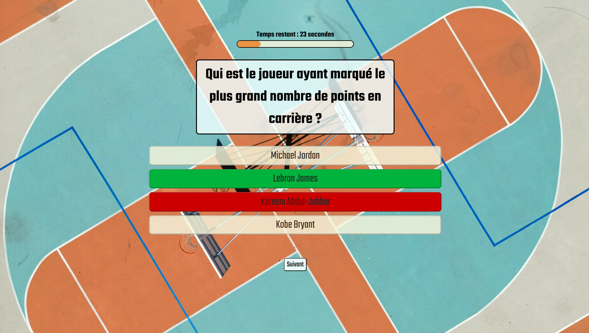
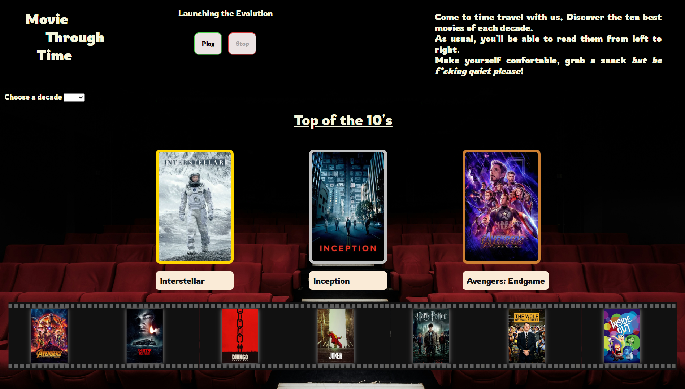
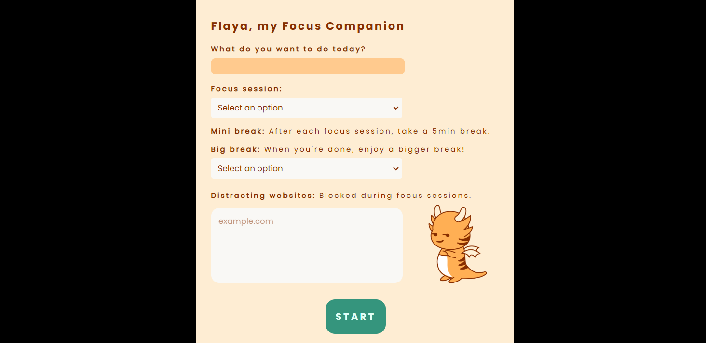
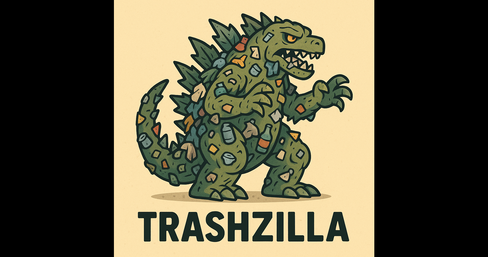

Hi, Welcome
it's me - Loïc
Web Developer

Actuellement en training camp à l’Ada Tech School, je me reconvertis pour passer d’un poste d'infirmier coordinateur à celui de meneur de jeu sur le terrain du développement.
Objectif : décrocher mon double contrat RNCP 6 (BAC+3/4) Concepteur et Développeur d'Applications et viser le niveau 7 (BAC+5) Expert en Architecture et Développement Logiciel, version All-Star.
Pour atteindre ce niveau de jeu, je cherche une franchise (entreprise) prête à m’intégrer en alternance sur une saison minimum (12 à 36 mois) pour que je puisse affûter mes skills en conditions réelles.
Ancien capitaine d’équipe dans la santé pendant 6 ans, j’amène avec moi une vraie lecture du jeu (empathie), une excellente réactivité balle en main (prise de décision), et un sens du collectif indispensable pour faire tourner l’équipe.
Mon mindset : jouer juste, coder propre, et toujours viser la passe décisive autant que le tir clutch.
HTML
CSS (Tailwind)
JS
Bootstrap
JAVA (Spring)
Python
PHP
SQL (MySQL-PostgreSQL)
VSCode
IntelliJ
Postman
Git
Mon esprit logique, c’est ma lecture du jeu. J’organise mon code comme une stratégie sur demi-terrain : rigueur, anticipation, et exécution.
Chaque bug résolu, c’est un game-winner à 3 points – plus le bug est coriace, plus la victoire est belle.
Mon passé de coordinateur m’a donné de solides skills hors du terrain : gestion de projet (vision tactique), communication (jeu collectif), leadership (capacité à driver une équipe), et même développement commercial (savoir lire le marché comme une défense adverse).
Les projets à l’école sont de vrais matchs d’entraînement : j’y travaille ma technique, j’expérimente des systèmes de jeu, et je renforce ma polyvalence match après match.
Projet individuel : rookie
HTML - CSS - JS
Méthode Agile - Retrospective
Git / GitHub
Projet de groupe : 4p/2sem
HTML - CSS - JS
API - Data - Postman
Sécurité APIkey / Token
Projet de groupe : 4p/2sem
Architecture extension
Stockage chrome.storage
Communication scripts
Projet de groupe : 2p/2sem
HTM-TailwindCSS-JS-Java (Spring)
Création API - PosgreSQL
Single Page Application